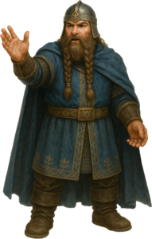

Bardh
Sindarin Crash Course by Rínor
Contents
Sindarin nouns work like nouns in English: they name people, animals, places, things, ideas, and so on.

Sindarin usually forms ordinary noun plurals by changing the vowels of the word. This process is called i-affection and comes from the influence of an ancient plural ending -ī, which later disappeared. For example, the singular word adan transforms into the plural edain, and orch changes to yrch. English has comparable vowel changes in “man” and “men”.
Some nouns have the same form in the singular and plural, while others have irregular plurals or use plural endings. We will look at these differences below. You can also explore forms with the Sindarin Pluralizer.
How a vowel changes under i-affection depends on the vowel itself, where it appears in the word, and the sounds that follow it. The main patterns are internal i-affection, final i-affection, and final i-intrusion.
Why does final a have two outcomes? A final consonant cluster generally blocks i-intrusion, giving a → e. A single-consonant ending generally permits intrusion, giving a → ai. The word’s history can produce exceptions to this pattern.
Compound nouns: Sometimes only the final element changes in the plural because the first element keeps its independent form. Other compounds show changes more widely. Which pattern a compound follows depends on how it was formed and how it developed.
Further detail: Eldamo on plural nouns.
Sindarin also has another kind of plural, formed with endings such as -ath, -hoth, or -rim. Compare:
Tolkien usually called this the “collective” or “group” plural. In modern Neo-Sindarin discussion, it is usually called the “class plural”.
What does “all” mean here? A class plural can refer to an entire class, or simply to the whole group being talked about in a particular situation. It can even describe a limited group, including a group of two. The ending -ath is not a dual ending.
The endings have different uses. -ath is the general class-plural ending. Formations with -rim and -hoth commonly name groups of people or beings, and -hoth often carries the connotation of a horde. These endings are not freely interchangeable.
Formation and agreement: Be careful when forming a class plural: historical sounds that disappeared from the singular can sometimes reappear. This means you cannot always form a class plural simply by adding an ending to the word you see.
Further detail: Eldamo on class plurals.
Not every Sindarin noun follows the regular plural patterns above. Some plurals depend on the word's earlier history and the sound changes it went through. The overview below is adapted from Eldamo’s discussion of unusual plurals.
The article is a proclitic, a short word closely attached in speech to the following word. Tolkien sometimes marked this connection with a dot or hyphen, but also wrote the article separately.
Tolkien used more than one article system over the years. I show both below, but the vocabulary exercise in this course uses the later CEA forms.
The singular article is i and the plural is i/in. Sindarin does not have an indefinite article equivalent to English “a” or “an”. When a noun is indefinite, it normally stands alone: “the man” is expressed as “i adan”, while “a man” is simply “adan”. The singular article causes soft mutation; the plural article causes nasal mutation. The plural article retains its n before vowels, while before many consonants the n disappears and the following consonant shows nasal mutation.
In the 1969 Common Eldarin Article material published in Parma Eldalamberon XXIII (PE23), Tolkien revised the singular article to e/en, with a retained i in the special case described below. The plural remained i/in.
| Article | Environment | Effect on the noun |
|---|---|---|
| e | Singular, before most original consonants | Soft mutation |
| en | Singular, before an original vowel | No initial consonant to mutate |
| i | Singular, where an original g disappears under soft mutation | The initial g is lost |
| i / in | Plural, with the surface form determined by the following sound | Nasal mutation where applicable |
A vowel at the beginning of the unmutated written form may be original or may result from the loss of an earlier consonant. In my own writing, and throughout this course, I retain historical nasals when they reappear after an article or preposition. Thus words historically beginning in mb-, nd-, or ng- are written with those consonants restored in the relevant environments, following the appropriate rows of the mutation chart. This is a spelling convention I use consistently in the course, following attested spellings such as i·mbair, i·nduir, and i·ñguin; other Neo-Sindarin writers may choose different conventions.
Plural formation and article mutation are separate. The noun needs its plural form as well as the initial-consonant change caused by the plural article. An article does not replace the noun’s plural vowel changes.
A bare noun is not always indefinite. Names and general statements may appear without an article, and a genitive construction can establish definiteness for a whole noun phrase. English “the” is therefore not a word-for-word guide to Sindarin article use. See the lessons on genitives and possessives for related constructions.
Further detail: Eldamo on definite articles and the CEA material.
A direct object is the person or thing receiving the action of the verb. In Sindarin, it commonly follows the verb and shows soft mutation, also called grammatical lenition. For example:
The mutation does not occur simply because a word follows a verb. A vocative names the person or thing being addressed and does not take object mutation. For example:
In these phrases calad, morn and mellon are not lenited because they are the people or things being addressed, not direct objects of the verbs. A direct object would be lenited, as in Pedo beth mellon. “Say the word (peth) friend.” ✧ PE23/143; VT44/26
A subject can also follow its verb. Tolkien explicitly distinguishes this from the direct-object construction: a post-verbal subject does not take object mutation merely because of its position (PE23/143). An imperative expressing a wish may likewise be followed by the subject of that wish.
Further detail: Eldamo on direct objects and imperatives and wishes.
Practice the vocabulary and CEA article forms from this lesson. Capitalization, spaces, and the middle dot are treated as presentation choices by the exercise.